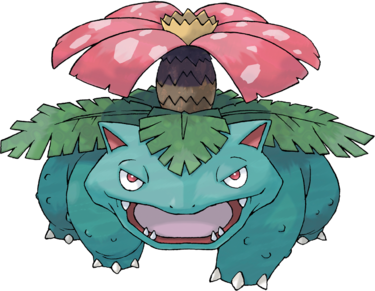

Florizarre est un imposant quadrupède à la peau verte ayant l'aspect d'un batracien, il est beaucoup plus grand et lourd que Bulbizarre et Herbizarre. Il porte une grande fleur rose tachetée sur son dos, entourée de quatre grandes feuilles. L'intérieur de ses oreilles s'est coloré de rouge et sa peau au niveau de ses pattes est désormais recouverte d'excroissances faisant penser aux verrues d'un crapaud. Sa bouche est ornée de six petites canines. Chacun de ses pas provoque un tremblement du sol. Sa fleur émet un parfum qui calme les esprits et appâte les Pokémon. Ce parfum est plus entêtant après une journée de pluie. La fleur permet aussi à Florizarre d'absorber les rayons du soleil pour se soigner ou être plus efficace en combat.